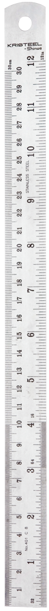

{% extends "layout.html" %}
<html>

<head>
	{% block content %}
	<script>
		let information = {{ knife | tojson }}
		let progress = {{progress|tojson}}
		let id = {{id|tojson}}
		console.log("id",id)
		// console.log(information)
		console.log("process", progress)
	</script>
	<script type="text/javascript" src="{{ url_for('static', filename = 'learn.js') }}"> </script>


</head>

<body>
	<div class="learn-container">
			<div class=row>
				<div class="learn-img-container col-md-4">
					
					
				</div>
				<div class="col-md-8">
					<h1 class="title header"> {{knife.name.upper()}}</h1>
					<ul class="facts">
						{% for facts in knife.facts %}
						<li>{{facts}}</li>
						{% endfor %}
					</ul>
					<div class="foodImgs">
							 
							 
					</div>
				</div>
			</div>
		<div class="next-prev-div">
			<button class="btn btn-outline-dark prev next-prev" id="AllKnivesButton"> All Knives</button>
			<button class="btn btn-outline-primary prev next-prev" id="backButton">← Previous</button>
			<!-- <a id="AllKnivesButton"> Back to All Knives</a> -->
			<button class="btn btn-outline-primary next next-prev" id="nextButton"> Next →</button>
		</div>
	</div>
</body>
{% endblock %}

</html>
